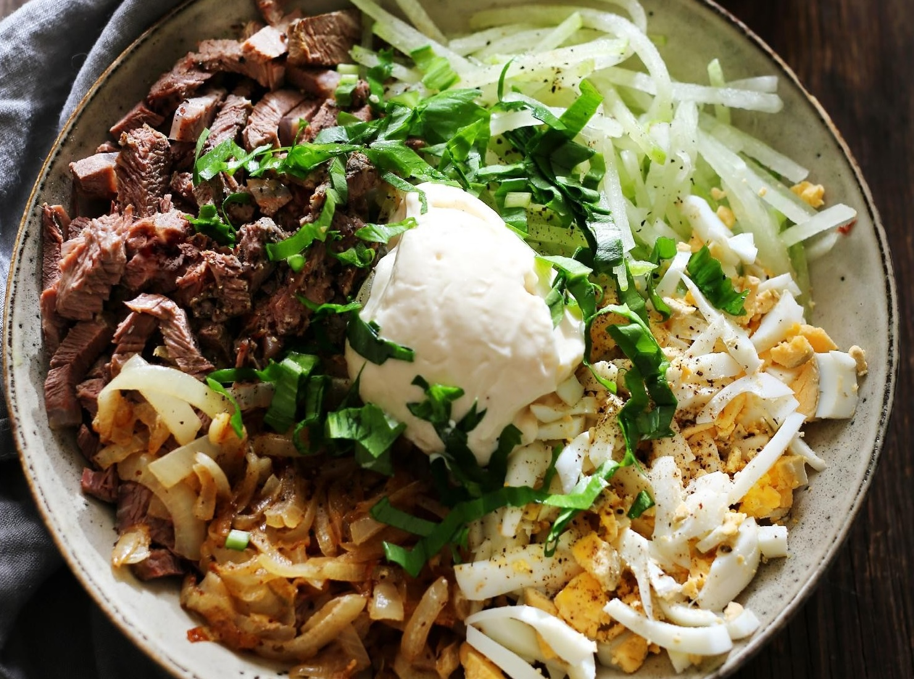

Узбекский салат на основе зеленой редьки, говядины, яиц и жареного лука. В теплое время года он может заменить собой обед или ужин. Или стать праздничной закуской в любой сезон.
Предварительно редьку рекомендуем слегка замариновать, чтобы смягчить резковатый вкус и сделать нежнее.